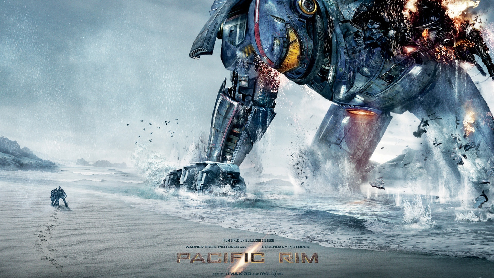

环太平洋1
吉尔莫·德尔·托罗
影片

近未来，地球环境逐步恶化。神秘外星殖民者通过大洋底部的虫洞“缺口”将身形庞大、残冷迅猛、身藏剧毒的怪兽接连派往地球， 有条不紊地实施着它们的殖民毁灭计划。为此，人类联手打造“贼鸥计划”，制造出与怪兽体型相当的机甲战士迎战，但随着怪兽渐次 进化，机甲战士全面溃败，各国政要试图修筑偏于防守的“生命之墙”以阻挡侵略者的脚步，无奈很快遭遇挫折。在此危急关头， 暗中仍推进“贼鸥计划”的斯特克·潘特考斯特将军（伊德瑞斯·艾尔巴 Idris Elba 饰）找回五年前曾遭受重大打击的“危险流浪者”驾驶 员（查理·汉纳姆 Charlie Hunnam 饰），并通过严格选拔为他选择了新的搭档森麻子（菊地凛子 饰）。复活的“流浪者”即将与另外 三台仅存的机甲战士迎战更强大的怪兽侵略者，同时寻找彻底扫除敌人的良机。苍茫的大海之上，人类保卫之战接连而起……
直达
影评
张着嘴看完的机甲大战怪兽片，CG特效和情绪冲击力如三部变形金刚加起来再乘以10，卖拷贝看了会不会放弃拍变4。那么高概念难实现的科幻故事只能搭配烂俗无意义的剧情才能成为合格的商业电影，遗憾在于香港之战把我High到窒息，以至于最后之战有点泄气。看完好想左手拿机甲右手拿怪兽坐在地上玩一整天。
获奖
第41届动画安妮奖 最佳真人电影动画效果
第12届美国视觉效果协会奖 最佳特效电影视觉效果(提名) 哈尔·T·希克尔 / 约翰·诺尔
第19届美国评论家选择电影奖 最佳视觉效果(提名)
第12届美国视觉效果协会奖 最佳特效电影视觉效果(提名) 哈尔·T·希克尔 / 约翰·诺尔
第19届美国评论家选择电影奖 最佳视觉效果(提名)
剧照
 |
 |